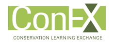
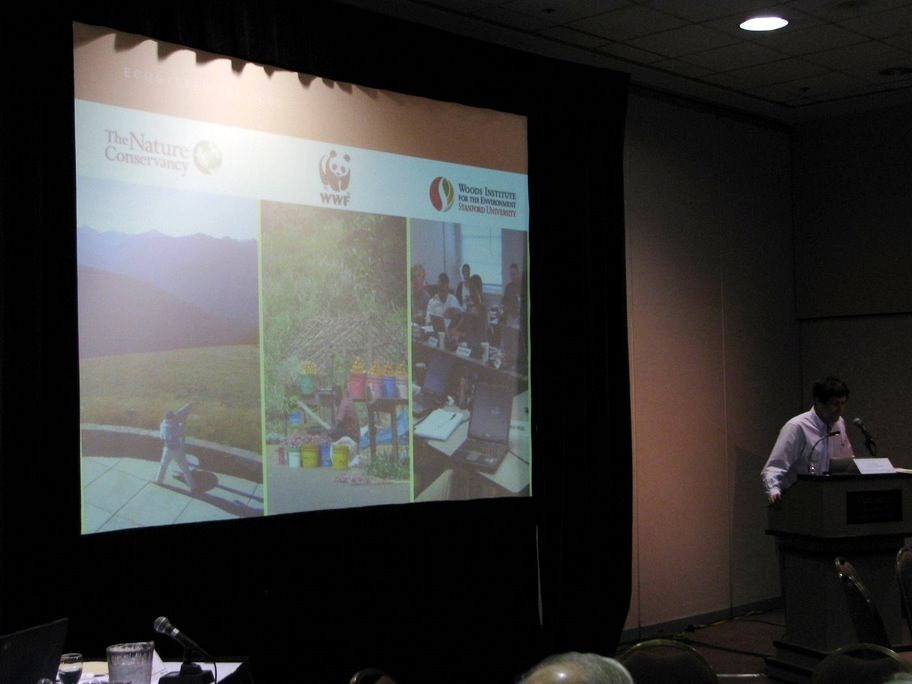
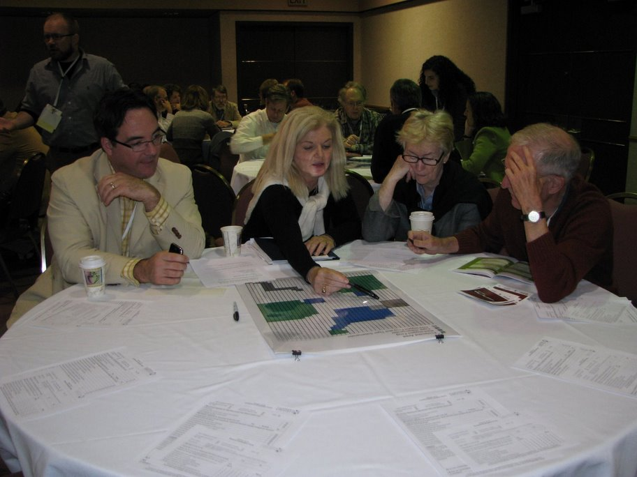
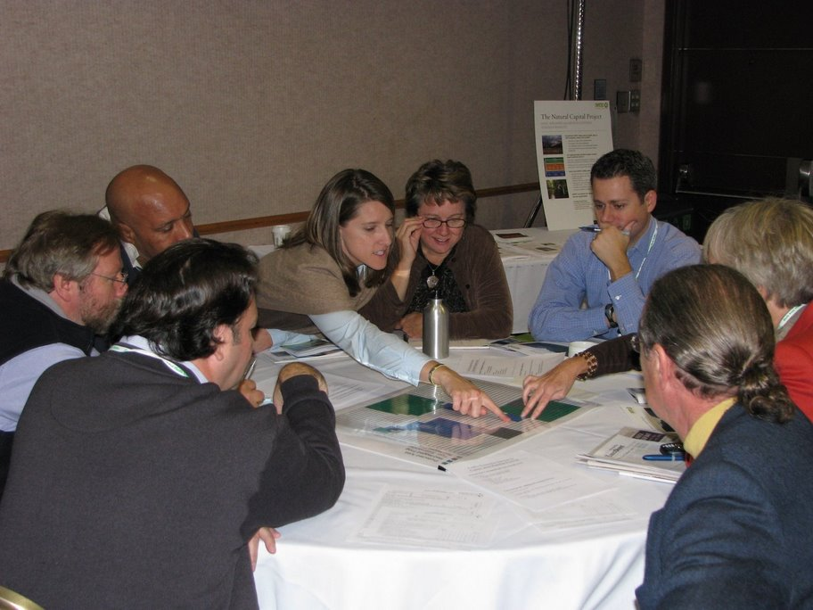
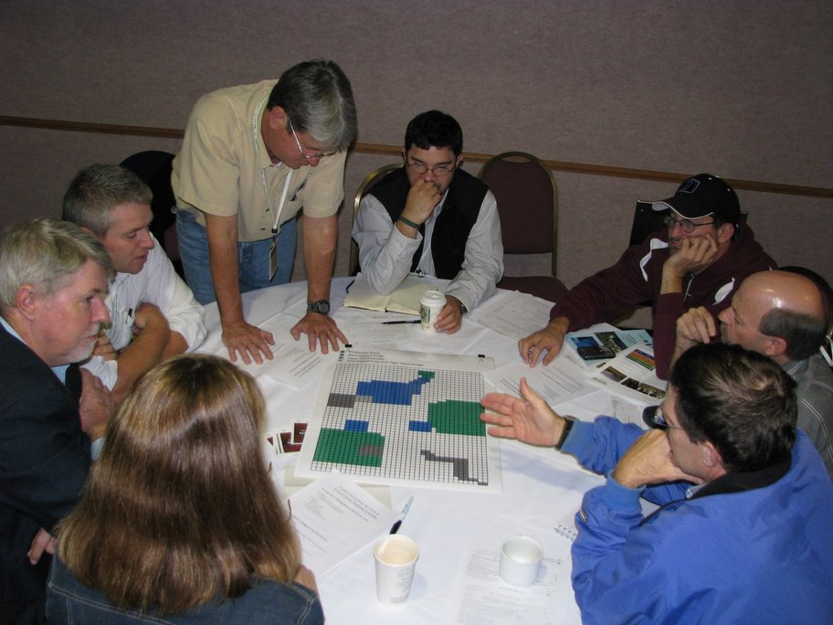
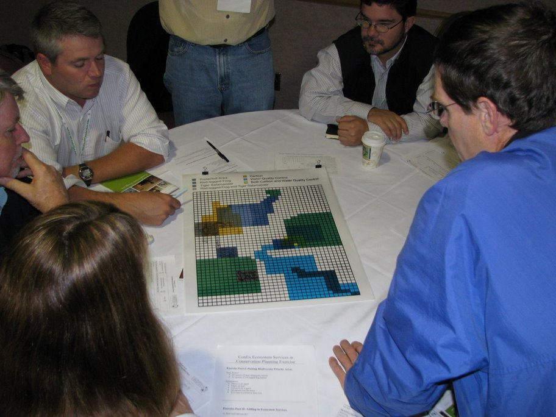
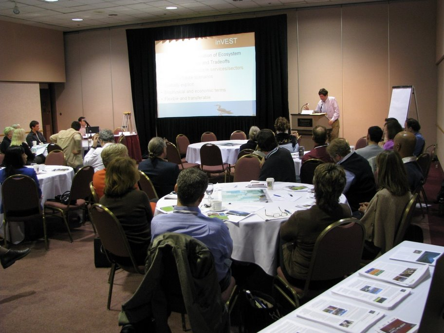
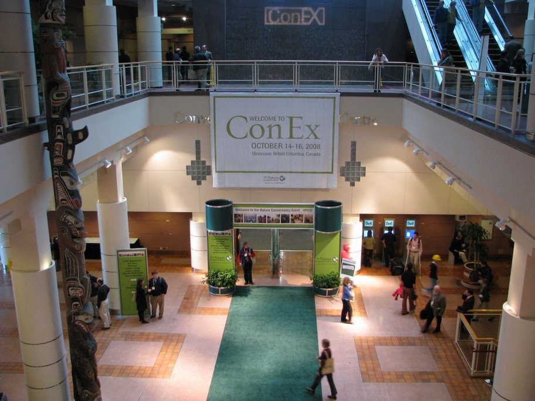
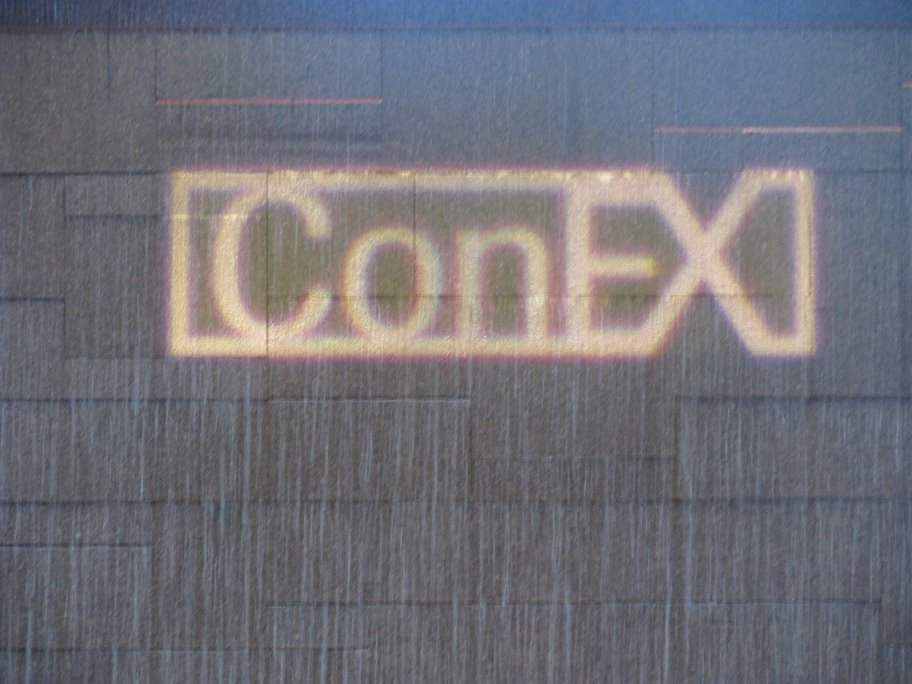

ConEX: Conservation Learning Exchange
October 14-15, 2008
Vancouver, BC
Conservation Learning Exchange Homepage
"Mapping and Valuing Ecosystem Services" Session:
"Can Ecosystem Services Work for Your Conservation Project?" Session:
3-page "Screening Criteria" Handout
3-page "How to Get Started" Handout
Framework for Assessing the Viability of an Ecosystem Service Approach to Conservation
Matriz para Avaliação da Viabilidade de uma Abordagem de Serviços de Ecossistema para Conservação (Portuguese)
InVEST Toolshed Printed Materials and Slideshows:
Natural Capital Project 2-page brochure
Sierra Nevada, California Site
Northern Tropical Andes Poster
WWF-Natural Capital Project Handout
Contact:
"Mapping and Valuing Ecosystem Services" Session Photos:







